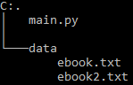

Python: Simple Markov Chains tutorial with Markovify
Tweet
Hello World!
Today we are going to take a look at how to create a simple Markov chain generator, by using markovify.
Let's get two ebooks from Project Gutenberg. For this tutorial we are going to use Alice in Wonderland and Grimms' Fairy Tales, you can download them as a UTF-8 txt.
Your project folder will be like this: 
Let's start coding!
import nltk
# Let's declare a function to get word index
def get_index(in_list,in_string):
for num,row in enumerate(in_list):
if in_string in row:
return num
# We convert the script from the NLTK Stopwords tutorial into a def
def clean_book(path):
# Let's open the book we downloaded
book = open(path,'r').read()
# Divide text by rows
rows = book.split('\n')
# Search for START and END tags to remove useless parts
start_idx = get_index(rows,'*** START')
end_idx = get_index(rows,'*** END')
rows = rows[start_idx+1:end_idx]
# We need to create a string for markovify
text = '\n'.join([r for r in rows if r!=''])
return text
We are going to use some of the code we wrote in the last tutorial.Let's create two functions:
- get_index(): Useful for getting the index of START and END
- clean_book(): Returns the book text without the parts added by Project Gutenberg
import markovify
# 1. Build the model.
ebook_a = clean_book('data/ebook.txt')
text_model_a = markovify.Text(ebook_a)
# 2. Print five randomly-generated sentences
for i in range(5):
print(text_model_a.make_sentence())
# 3. Print three randomly-generated sentences of no more than 140 characters
for i in range(3):
print(text_model_a.make_short_sentence(140))
Markovify is a really easy-to-use library. After importing we just need to create the model and we can start using it.
The steps are:
- We build the model by using markovify.Text(). The input MUST be a string.
- Then we can print sentences using the model we generated by calling text_model_a.make_sentence()
- We can also make a short sentence using text_model_a.make_short_sentence(max_length_of_sentence)
# Recreate the model using 3 sentences
three_model = markovify.Text(ebook_a,state_size=3)
for i in range(5):
print(three_model.make_sentence())
We can also use more than 2 sentences to create markov chains by using the state_size variable.
# Build the second model.
ebook_b = clean_book('data/ebook2.txt')
text_model_b = markovify.Text(ebook_b)
for i in range(5):
print(text_model_b.make_sentence())
# Combine the models into a single one
both_models = markovify.combine([text_model_a,text_model_b])
for i in range(5):
print(both_models.make_sentence())
We can also build a second model and combine it with the first.Here are some sentences generated by the combined model:
- When evening came, and it was very melancholy, and wandered up and rubbed its eyes: then it watched the geese on.
- ‘Well, then,’ the Gryphon only answered ‘Come on!’ cried the cat had a beautiful girl stood like a mountain.
- ‘Yes, dear father, your will shall be in a hurry.
- Then poor Snowdrop wandered along through the wood belonged was hunting in it, and shut his eyes, and died.
- The poor horse was the enemy’s commander-in-chief.
That's all for today! You can get the code of this post here.
Comments
Comments powered by Disqus